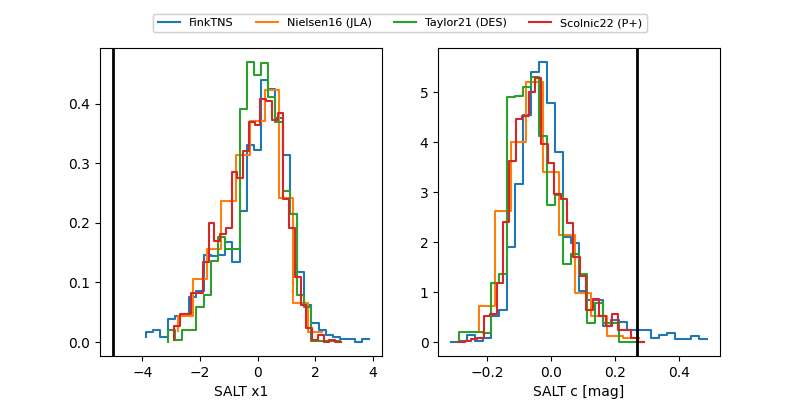

FINK: ZTF25abseduk
Lasair: ZTF25abseduk
ALeRCE: ZTF25abseduk
ZTF25abseduk (ztf,fink)
equatorial (ra, dec) = (335.6799,+27.29155)
galactic (l, b) = (86.6259,-24.90303)

last ztfg=20.42, ztfr=20.49
2 ztfg, 1 ztfr detections